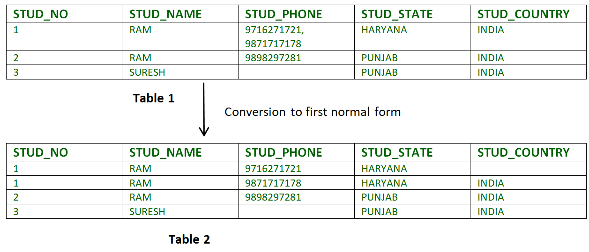
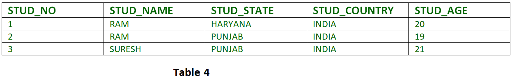

Prerequisite – Database normalization and functional dependency concept.
Normalization is the process of minimizing redundancy from a relation or set of relations. Redundancy in relation may cause insertion, deletion and updation anomalies. So, it helps to minimize the redundancy in relations. Normal forms are used to eliminate or reduce redundancy in database tables.
1. First Normal Form –
If a relation contain composite or multi-valued attribute, it violates first normal form or a relation is in first normal form if it does not contain any composite or multi-valued attribute. A relation is in first normal form if every attribute in that relation is singled valued attribute.
- Example 1 – Relation STUDENT in table 1 is not in 1NF because of multi-valued attribute STUD_PHONE. Its decomposition into 1NF has been shown in table 2.
 - Example 2 –
ID Name Courses ------------------ 1 A c1, c2 2 E c3 3 M C2, c3
In the above table Course is a multi valued attribute so it is not in 1NF.
Below Table is in 1NF as there is no multi valued attribute
ID Name Course ------------------ 1 A c1 1 A c2 2 E c3 3 M c1 3 M c2
{kind=link}
2. Second Normal Form –
To be in second normal form, a relation must be in first normal form and relation must not contain any partial dependency. A relation is in 2NF iff it has No Partial Dependency, i.e., no non-prime attribute (attributes which are not part of any candidate key) is dependent on any proper subset of any candidate key of the table.
{kind=link}
Partial Dependency – If proper subset of candidate key determines non-prime attribute, it is called partial dependency.
- Example 1 – In relation STUDENT_COURSE given in Table 3,
FD set: {COURSE_NO->COURSE_NAME} Candidate Key: {STUD_NO, COURSE_NO}In FD COURSE_NO->COURSE_NAME, COURSE_NO (proper subset of candidate key) is determining COURSE_NAME (non-prime attribute). Hence, it is partial dependency and relation is not in second normal form.
To convert it to second normal form, we will decompose the relation STUDENT_COURSE (STUD_NO, COURSE_NO, COURSE_NAME) as :STUDENT_COURSE (STUD_NO, COURSE_NO) COURSE (COURSE_NO, COURSE_NAME)
Note – This decomposition will be lossless join decomposition as well as dependency preserving.
- Example 2 – Consider following functional dependencies in relation R (A, B , C, D )
AB -> C [A and B together determine C] BC -> D [B and C together determine D]
In the above relation, AB is the only candidate key and there is no partial dependency, i.e., any proper subset of AB doesn’t determine any non-prime attribute.
- X is a super key.
- Y is a prime attribute (each element of Y is part of some candidate key).
- Example 1 – In relation STUDENT given in Table 4,
FD set: {STUD_NO -> STUD_NAME, STUD_NO -> STUD_STATE, STUD_NO -> STUD_COUNTRY, STUD_NO -> STUD_AGE, STUD_STATE -> STUD_COUNTRY}
Candidate Key: {STUD_NO}For this relation in table 4, STUD_NO -> STUD_STATE and STUD_STATE -> STUD_COUNTRY are true. So STUD_COUNTRY is transitively dependent on STUD_NO. It violates third normal form. To convert it in third normal form, we will decompose the relation STUDENT (STUD_NO, STUD_NAME, STUD_PHONE, STUD_STATE, STUD_COUNTRY_STUD_AGE) as:
STUDENT (STUD_NO, STUD_NAME, STUD_PHONE, STUD_STATE, STUD_AGE)
STATE_COUNTRY (STATE, COUNTRY) - Example 2 – Consider relation R(A, B, C, D, E)
A -> BC,
CD -> E,
B -> D,
E -> A
All possible candidate keys in above relation are {A, E, CD, BC} All attribute are on right sides of all functional dependencies are prime. - Example 1 – Find the highest normal form of a relation R(A,B,C,D,E) with FD set as {BC->D, AC->BE, B->E}
Step 1. As we can see, (AC)+ ={A,C,B,E,D} but none of its subset can determine all attribute of relation, So AC will be candidate key. A or C can’t be derived from any other attribute of the relation, so there will be only 1 candidate key {AC}.
Step 2. Prime attribute are those attribute which are part of candidate key {A,C} in this example and others will be non-prime {B,D,E} in this example.
Step 3. The relation R is in 1st normal form as a relational DBMS does not allow multi-valued or composite attribute.
The relation is in 2nd normal form because BC->D is in 2nd normal form (BC is not proper subset of candidate key AC) and AC->BE is in 2nd normal form (AC is candidate key) and B->E is in 2nd normal form (B is not a proper subset of candidate key AC).
The relation is not in 3rd normal form because in BC->D (neither BC is a super key nor D is a prime attribute) and in B->E (neither B is a super key nor E is a prime attribute) but to satisfy 3rd normal for, either LHS of an FD should be super key or RHS should be prime attribute.
So the highest normal form of relation will be 2nd Normal form. - Example 2 –For example consider relation R(A, B, C)
A -> BC,
B ->
A and B both are super keys so above relation is in BCNF. - BCNF is free from redundancy.
- If a relation is in BCNF, then 3NF is also also satisfied.
- If all attributes of relation are prime attribute, then the relation is always in 3NF.
- A relation in a Relational Database is always and at least in 1NF form.
- Every Binary Relation ( a Relation with only 2 attributes ) is always in BCNF.
- If a Relation has only singleton candidate keys( i.e. every candidate key consists of only 1 attribute), then the Relation is always in 2NF( because no Partial functional dependency possible).
- Sometimes going for BCNF form may not preserve functional dependency. In that case go for BCNF only if the lost FD(s) is not required, else normalize till 3NF only.
- There are many more Normal forms that exist after BCNF, like 4NF and more. But in real world database systems it’s generally not required to go beyond BCNF.
3. Third Normal Form –
A relation is in third normal form, if there is no transitive dependency for non-prime attributes is it is in second normal form.
A relation is in 3NF iff at least one of the following condition holds in every non-trivial function dependency X –> Y

Transitive dependency – If A->B and B->C are two FDs then A->C is called transitive dependency.
{kind=link}
4. Boyce-Codd Normal Form (BCNF) –
A relation R is in BCNF if R is in Third Normal Form and for every FD, LHS is super key. A relation is in BCNF iff in every non-trivial functional dependency X –> Y, X is a super key.
Key Points –
Exercise 1: Find the highest normal form in R (A, B, C, D, E) under following functional dependencies.
ABC --> D CD --> AE
Important Points for solving above type of question.
1) It is always a good idea to start checking from BCNF, then 3 NF and so on.
2) If any functional dependency satisfied a normal form then there is no need to check for lower normal form. For example, ABC –> D is in BCNF (Note that ABC is a super key), so no need to check this dependency for lower normal forms.
Candidate keys in given relation are {ABC, BCD}
BCNF: ABC -> D is in BCNF. Let us check CD -> AE, CD is not a super key so this dependency is not in BCNF. So, R is not in BCNF.
3NF: ABC -> D we don’t need to check for this dependency as it already satisfied BCNF. Let us consider CD -> AE. Since E is not a prime attribute, so relation is not in 3NF.
2NF: In 2NF, we need to check for partial dependency. CD which is a proper subset of a candidate key and it determine E, which is non prime attribute. So, given relation is also not in 2 NF. So, the highest normal form is 1 NF.
GATE CS Corner Questions
Practicing the following questions will help you test your knowledge. All questions have been asked in GATE in previous years or in GATE Mock Tests. It is highly recommended that you practice them.
- GATE CS 2012, Question 2
- GATE CS 2013, Question 54
- GATE CS 2013, Question 55
- GATE CS 2005, Question 29
- GATE CS 2002, Question 23
- GATE CS 2002, Question 50
- GATE CS 2001, Question 48
- GATE CS 1999, Question 32
- GATE IT 2005, Question 22
- GATE IT 2008, Question 60
- GATE CS 2016 (Set 1), Question 31
See Quiz on Database Normal Forms for all previous year questions.